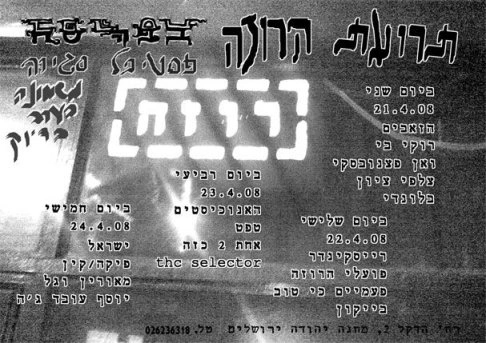
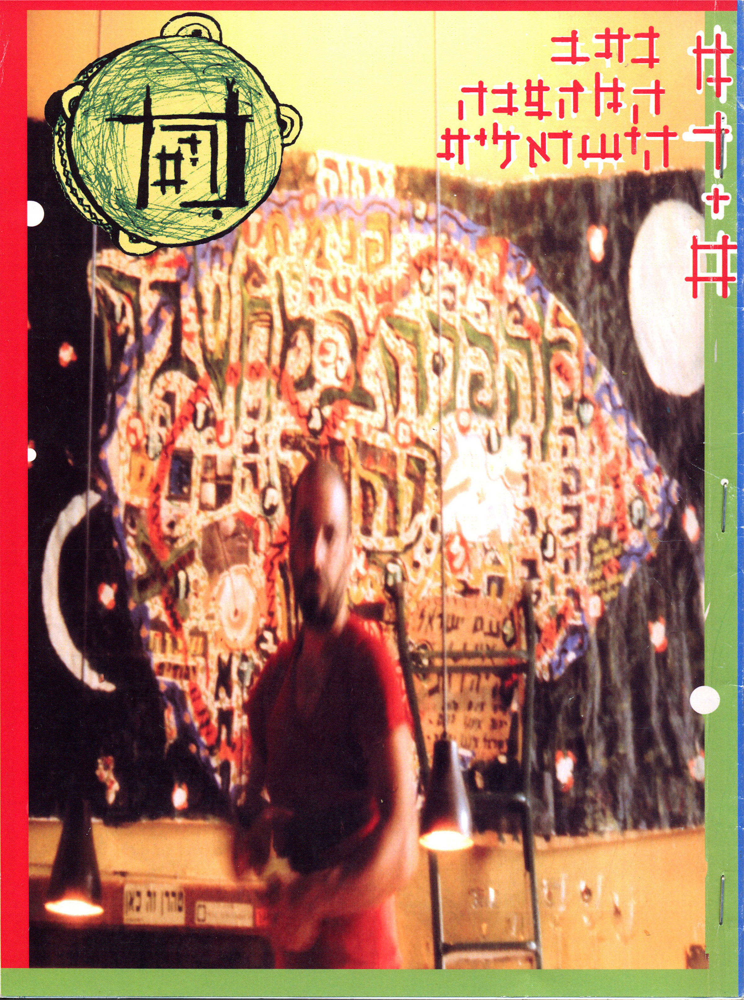
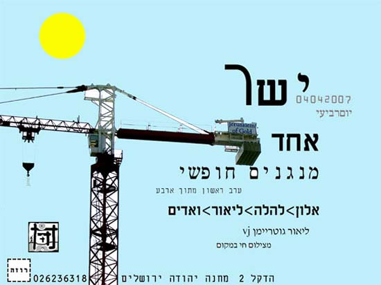

רוזה
מקום

הפאב רוזה נוסד על ידי אסנת פורשמיט בשותפות עם חבר בשם פריד בשארה (לאחר מכן עזב והקים את הדיוואן). באותה תקופה פאבים וברים היו במקומות ספציפיים כמו מגרש הרוסים או אזורי תעשייה, ולא בתוך שכונות מגורים. הרעיון היה להקים מקום שיהיה אבן שואבת לאנשים מכל התחומים ומקום ליצירה משותפת. החזון היה של מקום קטן, ביתי, שנעים לבוא אליו ולהיפגש. לא בהכרח מקום בילוי, אלא מקום להיות בו. הרעיון היה גם ליצור שותפות מקומית – דו-קיום של אנשים שחיים בירושלים.
הפאב התחיל בקטן, ללא פרסום, ותוך חודשיים־שלושה אנשים גילו אותו והתחילו להגיע, והוא הפך מקום ליצירה ושיתופי פעולה בעיקר במוזיקה. היו קבוצות ולייבלים שונים של מוזיקה שהתגבשו בערך באותו הזמן, כמו פאקט רקורדס שהיה של יורם אלייקים מחנות התקליטים באלאנס ברחוב שץ, ואק דאק – הלייבל שהקימו איתמר וויינר והראל שרייבר מהחנות/בר אוגנדה. היו קבוצות שונות מעולמות מוזיקה כמו טכנו, רגאיי, וג'אז. בהרכבים ובקבוצות שנוצרו שם השתתפו מוזיקאים ואמנים שונים שביניהם אלון אבנת (מדיואלט) וגבי קריכלי (נודע בכינוי גבי להלה), ששיתפו פעולה עם אנשים כגון ליאור גוטריימן (מ־ב12 והסירה). הרוזה סימן גם מעין ציר הליכה מתיאטרון פרגוד לעבר השוק, מיקום קצת סימלי שיצר קשר בין המקומות של מוזיקת השוליים.
הרוזה נהיה בסיס לפעולה של אנשים שונים שיחד יזמו דברים כמו רדיו (רדיו פריסקופ – שידורי המהפכה הישראלית), מגזינים (מגזין "מרים" שיצא במשך 20 גליונות) ומסיבות. המסיבות שימשו גם כדי לממן את הפעילויות השונות של חברי הקבוצות. פורשמיט מדגישה שהמסיבות, שלרוב היו של מוזיקת טכנו, והתרחשו במקומות שונים, היו בעלות אופי שונה מאוד ממה שקרה ברוזה עצמו. רוב הפעילות התרכזה סביב מוזיקה כמו להקת ישראל והרכבים קשורים, שהיא מתארת כבעלת סאונד מיוחד, מקומי. יש במוזיקה מכנה של קהילתיות שהרוזה היה מרכזה, והיווה במה שמאפשרת לדיבור בין אנשים להפוך ליצירה משותפת בצורה אורגנית.

שער הגליון הראשון של מגזין “מרים” שיצא ע”י אנשי הרוזה

כרזה לאירוע מסדרת “ישר” בה נפגשו והופיעו ארבעה אנשים שלא ניגנו יחד קודם לכן
עם הזמן ושינויים שקרו הפעילות סביב רוזה דעכה. היו שינויים פיזיים, חלקם שקשורים במקומות מגורים של אנשים – אנשים קבועים עזבו, ולא הגיע כוח חדש של אנשים צעירים שיחליף אותם. בנוסף הייתה שחיקה מחיי הלילה, והעובדה שאסנת ביצעה בעצמה כמעט הכל –מהפקת אירועים כל ערב, גרפיקה, סאונד, תיאומים, ועד תפעול הפאב ונקיונות. אחרי תקופה מסוימת שבה עברה לגור מחוץ לעיר הרוזה נסגר.
לאחרונה קם עמוד באתר Bandcamp שמרכז הקלטות חיות של הופעות שנעשו ברוזה. זאת לאחר שהיה לייבל להקלטות כאלה שהתקיים בזמן שהפאב פעל – שושנה רקורדס.